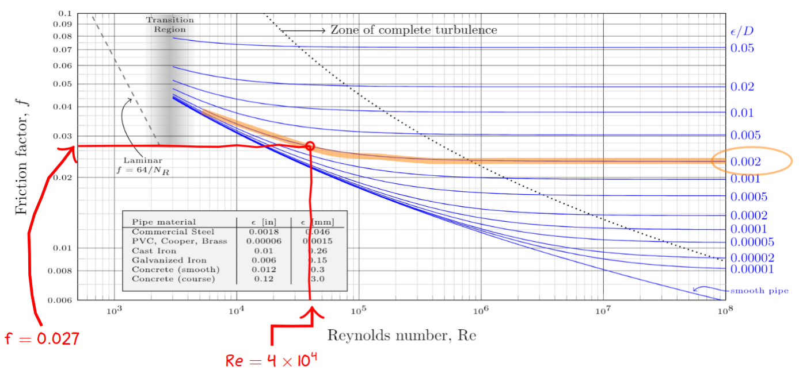

Benzene at 60°C is flowing in a DN 25 Schedule 80 steel pipe at the rate of 20 L/min. The specific weight of the benzene is 8.62 kN/m³. Calculate the pressure difference between two points 100 m apart if the pipe is horizontal.
Before we start let's first gather some data and calculate some quantities that we are likely to need.
The flow velocity is
$$
v=\frac{Q}{A}=\frac{20~\L/\min}{464.1\times 10^{-6} \m^2} \times \frac{1~\m^3/\s}{60,000~\L/\min} = 0.718~\m/\s
$$
where the flow area was taken from my
Schedule 80 Steel Pipe Data Table. Later on I'll need the inside diameter which is
$$
D=24.3~\mm
$$
With the expectation that we will need to compute the Reynolds number I looked up the dynamic viscosity of Benzene from
NIST Chemistry WebBook. At 60°C I found that
$$
\eta = 3.9419\times 10^{-4}~\Pa\cdot \s
$$
The density of this Benzene is
$$
\rho=\frac{\gamma}{g}=\frac{8.62 \kN/\m^2}{9.81~\m/\s^2}=879~\kg/\m^3
$$
Now we start working on the problem. The starting point is the general energy equation. Since there are no pumps or motors both $h_A$ and $h_R$ are zero. Since the pipe is horizontal $z_1=z_2$. Since the pipe has a constant cross-sectional area the velocity heads at point 1 and 2 are also equal. In this scenario the general energy equation reduces to
$$
p_1 - p_2 = \gamma h_L
$$
where the fluid flow is from point 1 to point 2. The energy loss due to friction is calculated from Darcy's equation
$$
h_L=f \frac{L}{D} \frac{v^2}{2g}
$$
In order to find the friction factor $f$ in the above expression we need to determine if the flow is laminar or turbulent. To do this we calculate the Reynolds number for the flow.
$$
N_R=\frac{vD\rho}{\eta}=\frac{(0.718)(0.0243)(879)}{3.9419\times 10^{-4}}=3.89\times 10^4
$$
Since the Reynolds number is above 4000 the flow is turbulent. In order to get the friction factor we need the relative roughness of the pipe. For commercial steel $\epsilon=0.046~\mm$ and
$$
\epsilon/D = 0.046/24.3 = 0.00189\approx 0.002
$$
The image below shows how I extracted $f=0.027$ from the Moody diagram using the curve for $\epsilon/D=0.002$ at a Reynolds number of $4\times 10^4$. This value of $f$ can be confirmed with our
calculator.

I can now return to Darcy's equation and evaluate the friction loss
$$
h_L=f \frac{L}{D} \frac{v^2}{2g} = 0.027 \times \frac{100}{0.0243} \frac{(0.718)^2}{2 (9.81)} = 2.92~\m
$$
The pressure drop is then
$$
p_1 - p_2 = \gamma h_L = 8.62~\kN/\m^3 \times 2.92~\m = 25.2~\kN/\m^2 = 25.2~\kPa
$$